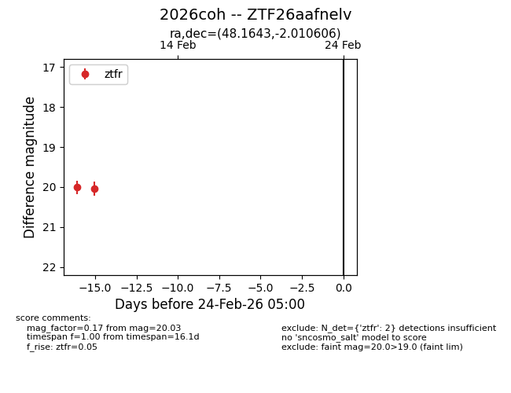
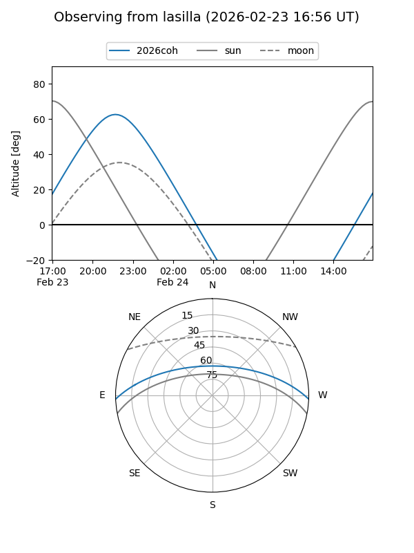
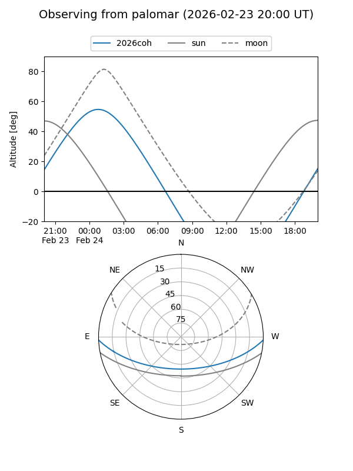

2026coh
Target 2026coh at 2026-02-24 09:08
Aliases and brokers:
FINK: link
Lasair: link
ALeRCE: link
TNS: link
YSE: link
alt names
ZTF26aafnelv (ztf,fink_ztf)
2026coh (tns,yse)
Coordinates:
equatorial (ra, dec) = 48.1643,-2.01061
equatorial (HMS+DMS) = 03:12:39.43,-02:00:38.18
galactic (l, b) = (182.3985,-47.89012)
Flags:
Photometry:
last ztfr=20.03
2 ztfr detections
Lightcurve

Visibility


Additional plots